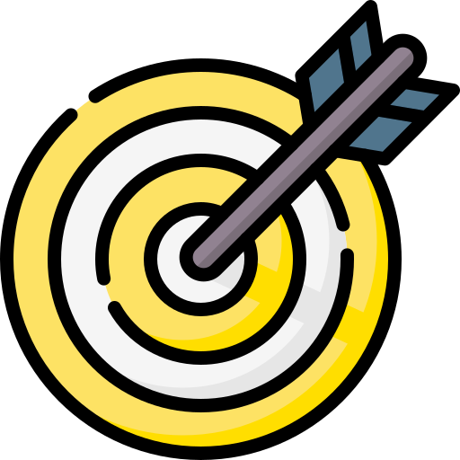

- Algoritmos e Programação
- Lógica Matemática
- Matemática Discreta
- Resolução de Problemas I
Quem constrói os aplicativos e jogos
que você usa todo dia?
Engenharia de Software é o curso de quem transforma ideias em programas que funcionam, na Universidade Federal do Pampa, campus Alegrete.
Conheça o curso- Bachareladograu conferido
- 9 semestresduração prevista
- Noturnoturno das aulas
- 50 vagaspor ano
O que é Engenharia de Software
Pense em uma ponte. Alguém precisa descobrir quantos carros vão passar, desenhar a estrutura, calcular o material, construir e testar antes de liberar o trânsito. Engenharia de Software faz o mesmo trabalho, só que com programas de computador.
Um aplicativo de banco, um jogo ou o sistema de um hospital não nascem de uma pessoa digitando código sozinha até dar certo. Eles nascem de uma equipe que entende o problema, combina como a solução vai funcionar, escreve o programa em partes, testa cada parte e corrige o que falha. Quando um desses passos é pulado, o programa trava, perde dados ou deixa alguém sem atendimento.
-
Entender o problema
Conversar com quem vai usar o programa e descobrir o que ele realmente precisa fazer. É a parte mais esquecida e a que mais causa erro.
-
Projetar e construir
Desenhar como as partes do sistema conversam entre si e então programar essas partes, uma de cada vez, com código que outra pessoa consiga ler depois.
-
Testar e cuidar
Procurar falhas antes que o usuário encontre, medir a qualidade e continuar melhorando o programa enquanto ele estiver no ar.
Você não precisa saber programar para entrar no curso. As primeiras disciplinas ensinam do começo.
Como é o curso
O curso é presencial, noturno, tem 9 semestres e 3.300 horas no total. A cada semestre você cursa disciplinas de quatro eixos: fundamentos da matemática, fundamentos da computação, engenharia de software e contexto profissional. Toque em um semestre para ver as disciplinas.
- Banco de Dados
- Computação e Sociedade
- Interação Humano-Computador
- Programação Orientada a Objetos
- Resolução de Problemas II
- Análise e Projeto de Software
- Arquitetura e Organização de Computadores
- Estruturas de Dados
- Inovação e Criatividade
- Linguagens Formais
- Resolução de Problemas III
- Análise e Projeto de Algoritmos
- Probabilidade e Estatística
- Processo e Qualidade de Software
- Sistemas Operacionais
- Verificação e Validação
- Resolução de Problemas IV
- Administração e Empreendedorismo
- Medição e Análise
- Redes de Computadores
- Resolução de Problemas V
- Componentes complementares (disciplinas que você escolhe)
- Metodologia da Pesquisa Acadêmica
- Resolução de Problemas VI
- Componentes complementares (disciplinas que você escolhe)
- Engenharia Econômica
- Ética e Legislação em Computação
- Trabalho de Conclusão de Curso I
- Componentes complementares (disciplinas que você escolhe)
- Teoria da Computação
- Trabalho de Conclusão de Curso II
- Componentes complementares (disciplinas que você escolhe)
- Estágio Obrigatório (240 horas trabalhando na área)
Fonte das disciplinas: Projeto Pedagógico do Curso de Bacharelado em Engenharia de Software, versão 18.4.4, abril de 2025, Tabelas 2 a 10.
Projetos
Estudantes e professores do curso levam software para fora da sala de aula. Estes são projetos de extensão registrados no projeto pedagógico do curso.
-

Programa JEDI
Resolve problemas locais com tecnologia, junto da comunidade e de empresas públicas ou privadas, e forma pessoas em Tecnologia da Informação.
-
Engenharia de Software aplicada a causas sociais
Estudantes e professores ajudam organizações não governamentais e associações da comunidade a melhorar seus processos com software.
-
Consultoria de TI para o agronegócio
Apoia empresas e agricultores de baixa renda a desenvolver ou adotar novas tecnologias e ferramentas no agronegócio.
Carreiras
Quem se forma em Engenharia de Software não fica preso a um único tipo de trabalho. O projeto pedagógico do curso aponta estes caminhos.
-
Desenvolvedor
Constrói o software em organizações que criam programas para uso próprio ou para vender.
-
Gestor
Organiza equipes, prazos, custos e escopo dentro de organizações que produzem software.
-
Consultor
Ajuda empresas a melhorar continuamente a forma como produzem software, usando modelos de qualidade.
-
Pesquisador
Investiga novas técnicas de engenharia de software em universidades e centros de pesquisa.
-
Empreendedor
Cria a própria empresa e oferece software como produto, projeto ou serviço.
-
Professor
Ensina programação e engenharia de software em escolas, cursos técnicos e universidades.
Como entrar no curso
São 50 vagas por ano, no turno da noite. A porta principal é a nota do Exame Nacional do Ensino Médio, o ENEM.
-
SiSU
Com a nota do ENEM do ano anterior, pelo sistema do Ministério da Educação.
-
Chamada por Notas do ENEM
Aceita a nota do ENEM dos últimos seis anos, pelo portal da Unipampa.
-
Chamada por Notas do Ensino Médio
Para as vagas que sobraram. Conta só português e matemática, sem ENEM.
- O Processo Seletivo Complementar acontece todo semestre e preenche as vagas que ficaram livres. Ele tem seis modalidades.
- Segundo Ciclo de Formação: para quem concluiu um curso interdisciplinar.
- Reingresso: para quem era da Unipampa e saiu há no máximo quatro semestres.
- Conclusão da Primeira Graduação: para quem parou uma graduação em outra instituição.
- Reopção de Curso: para quem já estuda na Unipampa e quer trocar de curso.
- Transferência Voluntária: para quem estuda em outra instituição.
- Portador de Diploma: para quem já tem diploma de curso superior.
- Processos seletivos específicos: pessoas fronteiriças, indígenas aldeadas e moradoras de quilombos, e candidatas latino-americanas e de países africanos de língua portuguesa.
- Transferência ex-officio: para servidor público federal transferido de cidade e seus dependentes.
- Programa de Estudantes-Convênio: para estudantes de países conveniados.
- Matrícula de cortesia: para estudantes estrangeiros com visto diplomático.
- Edital específico, quando o Conselho Universitário aprova.
- No SiSU há vagas reservadas pela Lei nº 12.711/2012 para quem cursou o ensino médio em escola pública, com recortes de renda, para pessoas pretas, pardas e indígenas e para pessoas com deficiência.
- Todo edital de ingresso regular da Unipampa reserva 2% das vagas para pessoas com deficiência e 2% para pessoas autodeclaradas negras.
No painel de notas de corte, escolha o campus Alegrete e o curso Engenharia de Software. Fontes: Projeto Pedagógico do Curso, versão 18.4.4, e portal de ingresso da Unipampa.
Vídeos
Veja e ouça quem já está no curso.
O Instagram do curso também publica vídeos com informações sobre a Engenharia de Software.
Contato e redes sociais
Ficou com dúvida? Fale com o curso ou acompanhe o dia a dia pelas redes.